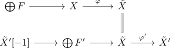
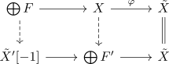
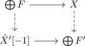
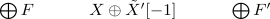
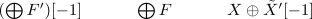

thick closure of a category containing infinite sums of finite spectra is spectra itself
Proposition
Let $\mathcal{C}$ be the full subcategory given by arbitrary sums of finite spectra. Then $\mathrm{Thick}(\mathcal{C}) = \mathrm{Sp}$.
Proof
Let $X$ be an arbitrary spectrum. Then it suffices to show that $X$ is the retract of some $\overline{X}$, where $\overline{X}$ is the cofiber $\bigoplus F' \rightarrow \bigoplus F \rightarrow \tilde{X}$ where $\bigoplus F, \bigoplus F'$ are sums of finite spectra.
Recall that there exists a weakly initial phantom map in spectra $\bigoplus F \rightarrow X \xrightarrow{\varphi} \tilde{X}$. There furthermore also exists a weakly initial phantom map $\bigoplus F' \rightarrow \tilde{X} \xrightarrow{\varphi'} \tilde{X}'$ and a diagram

Now the composition $X \xrightarrow{\varphi} \tilde{X} \xrightarrow{\varphi'} \tilde{X}'$ is the zero morphism (cf. composition of phantom maps in spectra is nullhomotopic).
Hence there exists a map $X \rightarrow \bigoplus F'$ where $\bigoplus F'$ is the fiber. Then functoriality of the fibers $X \rightarrow \tilde{X}$ and $\bigoplus F' \rightarrow \tilde{X}$ show that there exists a diagram

Now both rows are cofiber sequences with equivalent cofibers, so

is a pushout (cf. cofiber condition for a pushout in a stable category).
Using bifiber sequence and pushout/pullback in a stable category (mayer vietoris) shows that there exists a cofiber sequence

which we may rotate to get

where $(\bigoplus F')[-1] \simeq \bigoplus (F'[-1])$ is still a direct sum of finite spectra (cf. colimits commute with colimits, left / right and exact functor between stable infinity categories).
Moreover, $X$ is evidently a retract of $X \oplus \tilde{X}'[-1]$